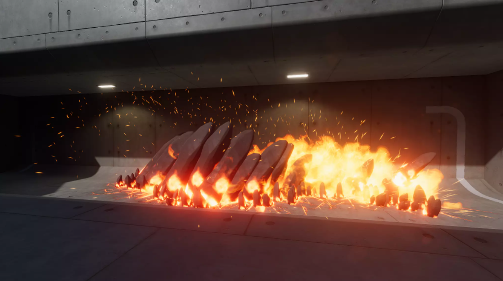

Sweet Dreams
Watch the gameplay demonstration here on YouTube.
View the GitHub repository for this project here.
View the Dissertation report for this project here.

Game Overview
Sweet Dreams is a first-person magic zombie game. The project was made in Unity while completing my University Dissertation. The objective of the game is to survive each of the levels’ rounds by killing the enemy Shadow Keepers with magical weapons.
Game Story Introduction
“It's summer break and you're in one of your lucid dreams as usual, but this time you hear a call for help from what sounds like the voice of your Grandfather.
The next morning when you wake, your Mother informs you that Grandfather is in hospital with an unknown condition after not waking from his sleep.
You decide to sleep at the hospital on the chair beside his hospital bed. As you enter one of your lucid dreams, Grandfather is there and tells you he has no time to explain, but says to find the Book of Secrets located in his loft at home.
The following morning, curiosity gets the better of you and you go to your Grandfather's loft on the small chance the encounter could have been real. You find the book! After taking it back to the hospital, you sit on the bedside chair and open the book to the first page, only find the pages are blank. You fall asleep.
This time, you are greeted by a strange creature that tells you your current dream is connected to the books pages. To gain access to your Grandfather's dream, you first need to complete each page of the book. When a page's dream is complete, the contents of the page will be visible to the one that completes it. The creature explained that each page will reveal more truth behind the surreal situation.
After asking for more information from the creature, it simply replies saying this information can only be revealed to ones that prove to be worthy of knowing. Before your eyes, the creature then slowly disappears into thin air.”
Inspirations
The weapons are inspired by games such as 'Spellbreak' and 'Ziggurat 2'. The style of zombie survival and perks will be like 'Call of Duty: Zombies' but the play style will be similar to 'Borderlands 2' (explosive and crazy)! The colour theme was inspired by SUPERHOT's minimalist but elegant use of colour.
Combat
In this section, only the player's combat will be discussed. Each weapon prefab has a “Weapon” script attached to it. This script contains all information about the weapon other than its mana (ammo) and damage - further detail on this later. There is only one weapon active at a given time to ensure there are never multiple weapon fire activations at once. From the 4 weapons, there are only two types of fire, particle system play and raycast instantiation. All hit detection is implemented via particle collision on each enemy. The damage value applied in the particle collision is taken from the mana script via the weapon that made the impact. The visual particle systems for these weapons were provided by the “Unity Technologies Particle Pack”.
When the “Flamethrower” is activated by pressing/holding mouse 0, a coroutine will start which will loop until the mouse 0 is released, or the mana count has reached 0. For every piece of mana, it represents a full second of activation. As a result of this, the mana usage will always have the same worth no matter when they release mouse 0 during that second. Repeatedly spamming mouse 0 will not drain the mana capacity any quicker than holding the button. Figure below shows the visuals for this particle system.
The “Ice Lance” particle system plays on the mouse 0 button detection. Due to the weapon fire delay being longer than the particle duration, the player can keep the button down to keep firing the weapon provided the mana count is above 0. Each particle play is worth 1 mana - this is the same for all weapons besides the “Flamethrower”. After a certain amount of time, the Ice Shard will shatter into pieces before disappearing which the two figures below show.
Both the “Big Explosion” as seen in the first figure below and “Energy Explosion” as seen in the second figure below work in the same way. A raycast will instantiate the weapon particle system where the raycast hit. To ensure the explosion does not show half way into the object it hit, the prefab’s child (the particle system) is positioned a certain distance away from the centre towards the direction of the player.
The “Trap” was originally intended to be used as another weapon but was not possible due to how the visuals work. The “Trap” visuals is an area of hot rocks breaking up through the surface of the ground before crumbling down again that can be seen in the two figures below. If the particle system was not played along a flat surface, it would not work correctly so had to be positioned in a fixed location. For the “Trap” to be activated, the player needs to be within a certain range of the button while the round is currently playing and have enough points to afford it. If the conditions are met while the “E” key is pressed, the particle system will play. As the “Trap” has no “Weapon” script, the enemy will first check if the particle collision was from the Trap, then it will take a very large amount of damage, confirming that the enemy will die from the Trap if hit.
Enemy
The enemy prefab contains three scripts. The first script manages the enemyHealth. When the enemy first spawns, its health is calculated using the difficulty setting and current round. An OntriggerStay() method is used for the damage received by the “Trap” that is intended to kill any enemy provided that they are in contact with the “Trap” for more than half a second. For the damage from the player held weapons, an OnParticleCollision() is used which calls TakeDamage(), using the weapon’s GetDamage() as its parameter. If the enemies health reaches below 1, it will enter an isDead state where its death animation will begin and a coroutine for potentially dropping a collectable is called. Once the enemy has been dead for more than 5 seconds, the game object will be destroyed, removing the useless object from the hierarchy and scene.
The second script on the enemy is the EnemyAI. On Update(), provided that the EnemyHealth condition is not dead, the distance between the enemy and play is calculated and the EngageTarget() is run. In EngageTarget(), the code will first call FaceEnemy() which will ensure the enemy is always looking in the player’s direction. It will then take a hitableRange bool to know if the player is within a certain range, this will be used later. If the player is not close enough to attack and the enemy has not yet stopped moving, ChaseTarget() will run. Now the enemy navMeshAgent destination shall be set to the player's position and this Update()’s call will end. However, if the player is close enough to be attacked and the enemy still has not stopped, then the navMeshAgent path is reset and the enemy will AttackTarget(). The AttackTarget() sets the stopped bool to true and starts the attack animation. It then waits 0.7 seconds, meaning that the animation is done. Then it will set stopped to false again so the EngageTarget() will start attacking or following the target again. During the attack animation, at the exact time where the enemy strikes, an Animation Event is called in the EnemyAttack script. EnemyAttack is a very small script, its only function is to do damage to the player and display the damage canvas image, provided that the hitableRange is currently true for that frame.
Back on the EnemyAI script, when the enemy spawns, a wait timer would begin that lasted between 4-11 seconds. For example, if the time it waited was 10 seconds, if it was either the number 6 or 8, no audio would be played this time around. However, as the number was 10, it would now play an audio clip at random from the 5 Zombie sound options available. Also, whenever the enemy attack animation would trigger, a short attack sound would play for information to the player and realism. It was important to have a good random separation between the zombie-like groan audio timings to make it more realistic for the player and impossible for there to be a noticeable pattern.
The model and animations were provided by a "Zombie" asset on the asset store. To avoid the visual issue of the enemy object suddenly appearing and disappearing when dead, particle systems and complex materials are used. With the visual aid from the “Unity Technologies Particle Pack”, a teleport and dissolve effect was provided. When the enemy first spawns, the teleport effect will begin. Blue rings appear around the body of the enemy and a material script will start. This material script on the enemy is initially transparent, but will slowly and randomly start to reveal the enemy's body until they are fully visible - this can be seen in the figure below.
Once the enemy has died, the material will change to the dissolve effect. This all works similarly to the teleport effect except there are flakes and sparks as the body begins to dissolve, becoming transparent as shown in the two figures below.
While making the enemy, there were two issues which affected each other that were challenging to fix.
The first is that it was difficult to find the right balance for when the enemy can hit the player and the second issue was that the player was sometimes pushed through the walls by the enemies. There was a lot of trial and error so that when the enemy stops moving to attack the player which is currently walking, they are still close enough to hit the player if they do not instantly start sprinting away. This meant that the enemy needed to get very close to the player and its hitableRange condition needed to be true at a slightly longer distance to ensure the walking speed would still be hit. However, if the player was standing against the wall, the player would get pushed through the wall due to the enemy’s capsule collider pushing against the players. The issue was that the enemies destination was the player’s position, so when the resetPath was applied to the enemy once it was within range, this stopped the enemy straight away without pushing the player at first.
Environment
Located around the environment, there are multiple objects that the player can interact with. Those being the shops, trap and round start area. Whether something is interactable at that time depends on the current “WaveSpawner.SpawnState”. If the current enum state is WAITING then the shops and round start area can be used, but for the “Trap”, it needs to be in either SPAWNING or FIGHTING. On Update(), these interactable locations in the environment will check the distance between the player and object location, if it is closer than 3 then the UI interaction prompt will appear and its text will update. While within range and in the correct state, e.g. a shop, if the player presses “E” then the shop will open.
Collectables
When an enemy dies, a coroutine is called that will wait for a second then pick a random number between 0-20. If the value was 10, then it would instantiate a manaPickup in the enemy’s position, but +1 on the Y axis so it is floating. If the value was 11, it will do the same thing but with a healthPickup. Both of the pickups have a script that does things when collided with, for example the manaPickup will increase the mana by 25% for all weapons. If the collectable has not been collected after 20 seconds, it will destroy itself.
Shops
There are 4 shops in total around the map that the player can interact with when the round is in WAITING state.
In the Mana shop, there are 3 buttons for each of the 4 weapons available as shown in the figure below. The 3 buttons consist of a 25%, 50% and 100% buy. Provided that the player can afford the buy option, the button will get the current mana and the current mana capacity. It will then calculate the new mana to be added (if it is over the capacity then it will simply fill the mana to max). After this it will decrease the button's cost from the total points.
In the Upgrade shop, there are 2 upgrade options for each weapon as shown in the figure below. Both the damage increase and capacity increase work in very similar ways. The upgrade amounts are based on its starting value, not 10% of the new damage after upgrading. Also, the price increases every time the weapon is upgraded. In the IncreaseDamage(), it will find the new damage to be added by multiplying the starting damage by the damage increase multiplier (0.1). After this, it will round the value to an int and create the new damage by adding the previous with the increased value. Points will be withdrawn from the player and the cost will be increased by 25%.
For the Health shop, the buy health buttons will take a percentage of the current capacity and increase the health by that amount. However, if the new health goes above the capacity, then it will give the player the max health value for the current capacity instead. The capacity increase button will simply add 10 to the current capacity. The UI for this shop is shown in the figure below.
There are 2 types of buy buttons in the weapon purchase shop. Firstly, there are the buy buttons that when pressed, will update the switch buttons’ weapon cost and weapon to buy parameters as seen in the first figure below. The second buttons are the switch buttons as shown in the second figure below. These 2 buttons will have the names of the current weapons that the player has. This is done by using the 2 variables in the “WeaponSwitcher” script that is located on the player which handles the swapping of weapons in the inventory. The “WeaponSwitcher” script has references to its 2 children which are the weapons the player currently owns. This information is then used in the buttons to know which weapon to remove and which weapon to add. If the player picks a weapon to switch, the switcher UI will close and the points will be withdrawn from the player.
Learning Experiences
Example coding areas involved:
- Particle system weapons
- Zombie particle scripts, animations and movement
- In-game purchasing system
- Game audio and music
- Collectables
- Enemy wave and spawning system
- Menu
- Adjustable difficulty settings
- Weapon and stats upgrading
- Weapon traps
- Testing
- Damage, range, rate of fire, mana capacity etc